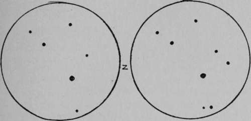

Pleiades As A Test Of Eyesight
Description
This section is from the book "The Book Of Woodcraft", by Ernest Thompson Seton. Also available from Amazon: The Book of Woodcraft.
Pleiades As A Test Of Eyesight
This star group has always been considered a good test of eyesight.
I once asked a group of boys in camp how many of the Pleiades they could count with the naked eye. A noisy, forward boy, who was nicknamed "Bluejay," because he was so fond of chattering and showing off, said, "Oh, I see hundreds".
"Well, you can sit down," I said, "for you can do nothing of the kind".
Another steadier boy said, "I believe I see six," and he proved that he did see them, for he mapped them out properly on a board with six pebbles.
That boy had good eyes, because poor eyes see merely a haze, but another boy present had better eyes, for he saw, and proved that he saw, seven. This is considered first-class. The Indians as a rule see seven, because they call them the Seven Stars. But, according to Flammarion, it is possible to exceed this, for several persons have given proof that they distinguished ten Pleiades. This is almost the extreme of human eyesight. There is, however, according to the same authority, a record of thirteen Pleiades having been actually seen by the unaided human eye.
The Pleiades as seen with the best of naked eyes.
The telescope reveals some 2 ,oco in the cluster.
The Indians call them the "Seven Dancers," and tell a legend that seems to explain their dancing about the smallest one, as well as the origin of the constellation.
Once there were seven little Indian boys, who used to take their bowl of succotash each night and eat their suppers together on a mound outside the village. Six were about the same size, one was smaller than the rest, but he had a sweet voice, and knew many songs, so after supper the others would dance around the mound to his singing, and he marked time on his drum.
When the frosty days of autumn were ending, and winter threatened to stop the nightly party, they said, "Let us ask our parents for some venison, so we can have a grand feast and dance for the last time on the mound".
They asked, but all were refused. Each father said, "When I was a little boy, I thought myself lucky to get even a pot of succotash, and never thought of asking for venison as well".
So the boys assembled at the mound. All were gloomy but the little singer, who said:
" Never mind, brothers! We shall feast without venison, and we shall be merry just the same, for I shall sing you a new song that will lighten your hearts".
First, he made each of them fasten on his head a little torch of birch bark, then he sat down in the middle and thumped away at his little drum and sang:
Ki yi yi yah Ki yi yi yah.
And faster.
Ki yi yi yah Ki yi yi yah.
And faster still, till now they were spinning round. Then:
Ki yi yi yah Ki yi yi yah Whoooooop.
They were fairly whirling now, and, as the singer gave this last whoop of the last dance on the mound, they and he went dancing over the treetops into the sky; light of heart and heels and head, they went, and their parents rushed out in time to see them go, but too late to stop them. And now you may see them every clear autumn night as winter draws near; you may see the little torches sparkling as they dance, the six around the little one in the middle. Of course, you can't hear his song, or even his drum, but you must remember he is a long way off now.
There is another story of a little Indian girl called Two-Bright-Eyes. She was the only child of her parents. She wandered away one evening seeking the whippoorwill and got lost - you see, even Indians get lost sometimes. She never returned. The mourning parents never learned what became of her, but they thought they saw a new pair of twin stars rising through the trees not long after, and when their grief was so softened by time that they could sing about it, this is the song they made about their loss:
The Twin Stars
Two-Bright-Eyes went wandering out To chase the whippoorwill.
Two-Bright-Eyes got lost, and left Our teepee, oh, so still!
Two-Bright-Eyes was lifted up.
To sparkle in the skies, And look like stars, but we know well.
That that's our lost Bright-Eyes.
She is looking for the camp,
She would come back if she could;
She is peeping thro' the trees to find The teepee in the wood.
Continue to:
Tags
bookdome.com, books, online, free, old, antique, new, read, browse, download